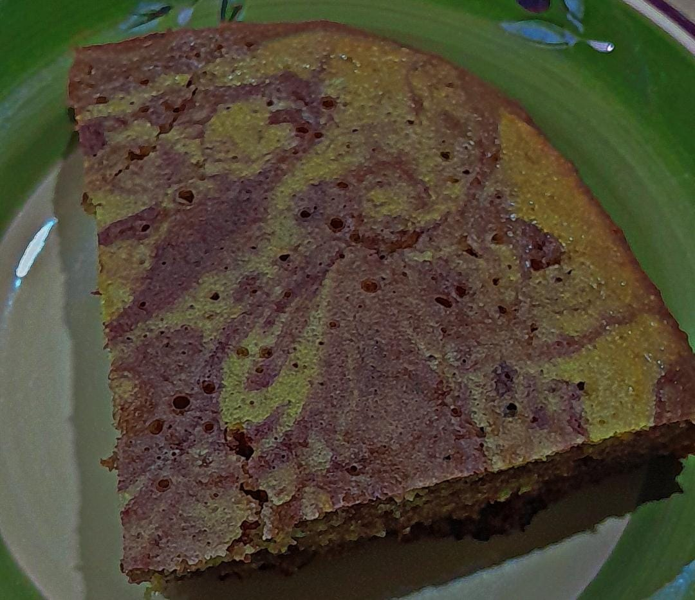

Chocolate Cake Recipe

Description
This chocolate cake is a beautiful and delicious dessert that combines the rich flavor of chocolate with a swirl of vanilla batter. Perfect for birthdays or special occasions!
Ingredients
- 1 1/2 cups all-purpose flour
- 1 cup granulated sugar
- 1/2 cup unsalted butter, softened
- 2 large eggs
- 1 cup milk
- 1 teaspoon vanilla extract
- 1/2 cup cocoa powder
- 1 teaspoon baking powder
- 1/2 teaspoon baking soda
- 1/4 teaspoon salt
Steps
- Preheat your oven to 350°F (175°C). Grease and flour a cake pan.
- In a large bowl, cream together the butter and sugar until light and fluffy.
- Add the eggs one at a time, beating well after each addition.
- Mix in the milk and vanilla extract.
- In a separate bowl, whisk together the flour, cocoa powder, baking powder, baking soda, and salt.
- Gradually add the dry ingredients to the wet ingredients, mixing until just combined.
- Pour the batter into the prepared cake pan and smooth the top.
- Bake for 30-35 minutes, or until a toothpick inserted into the center comes out clean.
- Allow the cake to cool in the pan for 10 minutes, then transfer to a wire rack to cool completely.
Home